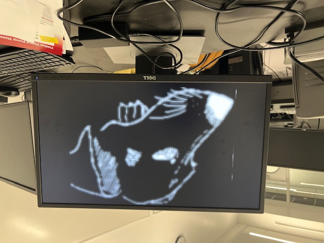

Fourth-Year Computer Engineering Student
I'm a Computer Engineer passionate about building efficient and scalable systems. My work spans embedded systems, full-stack development, and AI-driven applications. Whether optimizing low-level hardward interactions or designing cloud-based architectures, I enjoy tackling complex challenges with innovative solutions.
I'm proficient in Java, C++, C, and Python, as well as HTML, CSS, and Javascript. I have lots of experience working in Linux, Windows, and Ubuntu. Some of the projects you will see below include a full-stack chat messenger website, a chess game involving a Chess Engine, and a shell built entirely in the terminal.
A fully functional chess game created using Pygame and Python, with no other imported libraries. Supports checkmates, checks, all forms of draws, and even en passant. Seamlessly incorporates a chess engine, Leela Chess Zero, for suggested moves.
An autonomous F1Tenth car capable of navigating around obstacles and finding ideal racing lines using LiDAR. Included camera functionality with a custom trained YOLO model to detect and recognize stop signs, speed signs, etc. and act accordingly. Programmed in both C++ and Python nodes for ROS 2 Foxy in Ubuntu.
Tempest is an android application, developed using Kotlin to allow users to get information about natural disasters near their location. Uses many external services, like Firebase Console for notifications, Google Authnetication for profile log-in/sign-up, as well as AWS for server hosting and DynamoDB.
crash is a Unix-style terminal shell built in C, featuring signal-safe design, robust job control, process forking, and precise signal handling.
Developed the frontend and backend of a messenger web app that allows users to create chat rooms and talk with users in the chat rooms. Uses a MongoDB to store messages and user information, with secure hashing for user privacy. Supports AI translation for 100+ languages.
Designed several slave-master interfaces with Quartus' Platform Designer, along with their SystemVerilog implementations to increase the efficiency of a deep neural network through hardware acceleration.

Created a full-stack web application that helps users discover creative, easy-to-follow recipes and track nutritional information. Used an Oracle database to manage users, ingredients, recipes, and more. Followed a Controller-Service architecture for a clean and modular codebase.
Created a fully playable Baccarat game in SystemVerilog, designed to run on the DE1-SoC hardware platform. The entire game logic, including card dealing, hand scoring, and win/loss detection, was implemented from scratch, with real-time interaction using onboard hardware.
Worked extensively on the OS/161 educational operating system, implementing and debugging key components like system calls, process management, memory management, and virtual memory. Gained hands-on experience working with a real kernel in a low-level C environment.